Oleksandr


Oleksandr
Створюю адаптивні та зручні для користувачів вебсайти за допомогою HTML, CSS, SCSS та Git.
Постійно вдосконалюю свої навички через власні проєкти та практичне навчання.
Я Frontend Developer-початківець, який зосереджений на створенні сучасних та адаптивних вебсайтів.
Понад 5 років проживаю та працюю в Польщі. За цей час я розвинув навички комунікації, адаптивність і дисциплінований підхід до навчання та розвитку.
Основними технологіями, з якими я працюю, є HTML, CSS, SCSS та Git. Я постійно вдосконалюю свої навички через власні проєкти, практичне навчання та вивчення сучасних підходів до фронтенд-розробки.
Моя мета — побудувати кар'єру Frontend Developer та створювати якісні й зручні вебрішення для користувачів.

Warsaw, Poland


- Semantic markup
- Responsive layouts
- Accessibility basics
- Flexbox
- Grid
- Animations
- Variables
- Nesting
- Mixins
- Partials
- Commits
- Branches
- GitHub
- Layout inspection
- Export assets
- Design implementation

Мій перший вебпроєкт, створений під час вивчення основ HTML та CSS. Саме завдяки цьому проєкту я познайомився зі структурою вебсторінок, стилізацією елементів, побудовою макетів і базовими принципами фронтенд-розробки. Цей проєкт став початком мого шляху як Frontend Developer і моїм першим практичним досвідом створення сайтів з нуля.
Мій перший вебпроєкт, створений під час вивчення основ HTML та CSS. Саме завдяки цьому проєкту я познайомився зі структурою вебсторінок, стилізацією елементів, побудовою макетів і базовими принципами фронтенд-розробки. Цей проєкт став початком мого шляху як Frontend Developer і моїм першим практичним досвідом створення сайтів з нуля.
Мій перший вебпроєкт, створений під час вивчення основ HTML та CSS. Саме завдяки цьому проєкту я познайомився зі структурою вебсторінок, стилізацією елементів, побудовою макетів і базовими принципами фронтенд-розробки. Цей проєкт став початком мого шляху як Frontend Developer і моїм першим практичним досвідом створення сайтів з нуля.
Мій перший вебпроєкт, створений під час вивчення основ HTML та CSS. Саме завдяки цьому проєкту я познайомився зі структурою вебсторінок, стилізацією елементів, побудовою макетів і базовими принципами фронтенд-розробки. Цей проєкт став початком мого шляху як Frontend Developer і моїм першим практичним досвідом створення сайтів з нуля.
Мій перший вебпроєкт, створений під час вивчення основ HTML та CSS. Саме завдяки цьому проєкту я познайомився зі структурою вебсторінок, стилізацією елементів, побудовою макетів і базовими принципами фронтенд-розробки. Цей проєкт став початком мого шляху як Frontend Developer і моїм першим практичним досвідом створення сайтів з нуля.